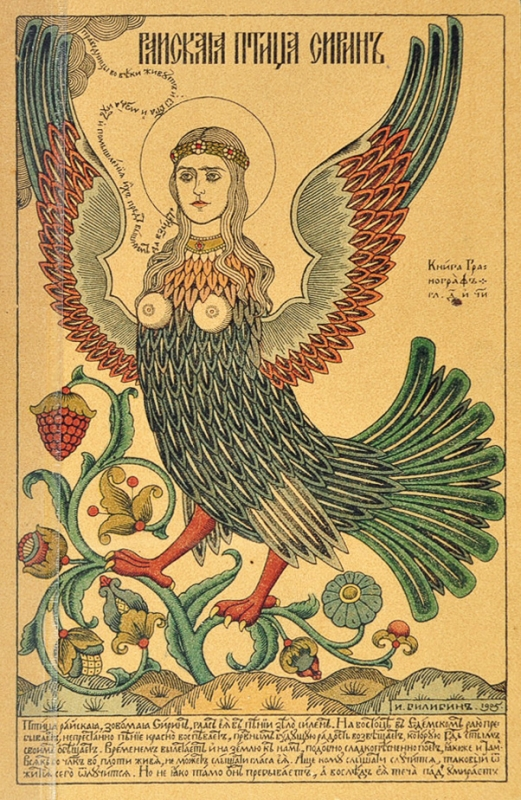
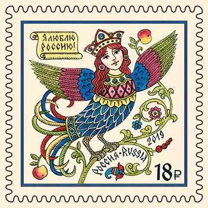

| Image |
Name(s) and author of the work of art |
Note |
 |
Sirin and Alkonost. Birds of Sorrow and Joy. An oil painting (1896), artist Viktor Vasnetsov |
The birds came to Slavic mythology from Greek myths about sirens. In Greek mythology sirens are humanlike beings with alluring voices. For example, they appear in Homer's Odyssey and almost kill Odissey and his crew. |
 |
Artist Ivan Bilibin (1902) |
Birds of paradise meet Baba Yaga. |
|  |
Artist Ivan Bilibin (1905) |
A folk belief. Apple Feast of the Savior (August 19). During this feast, Sirin flies into apple orchard. She is sad and cries about the coming end of summer. Then Alkonost flies in and rejoyces the great harvest. |
 |
Sirin. Artist Sergei Iaguzhinskii (1862-1947). |
|
 |
Sirin. A sculpture on Mikhail Prishvin's grave (1956) in Moscow. Sculptor Sergei Konenkov |
Mikhail Prishvin is a Russian writer (1873-1954). |
|  |
a postal stamp (2019). Sirin. Artist Viktoria Vatolina. |
|

|
Sirin. Sand Sculpture in St. Petersburg (2019). Artist Sergei Zaplatin. |
Photo by Marina Larionova |
 |
a scarf design with Sirin and Alknost (2020). Artist Elona Laff. |
|
|
|
|